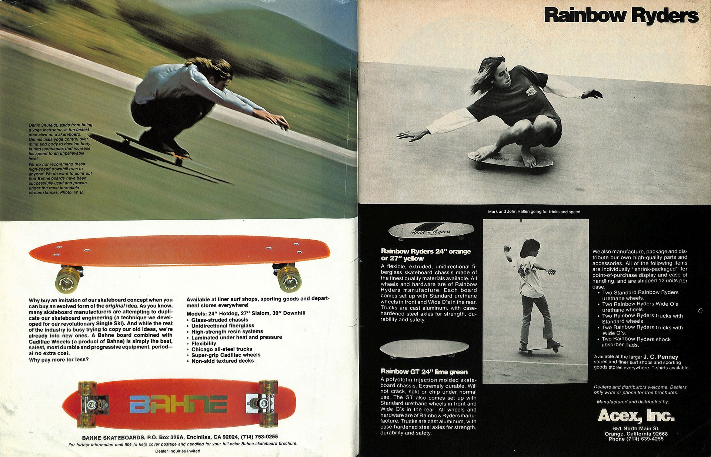
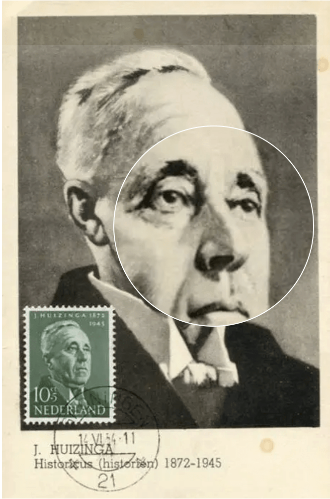
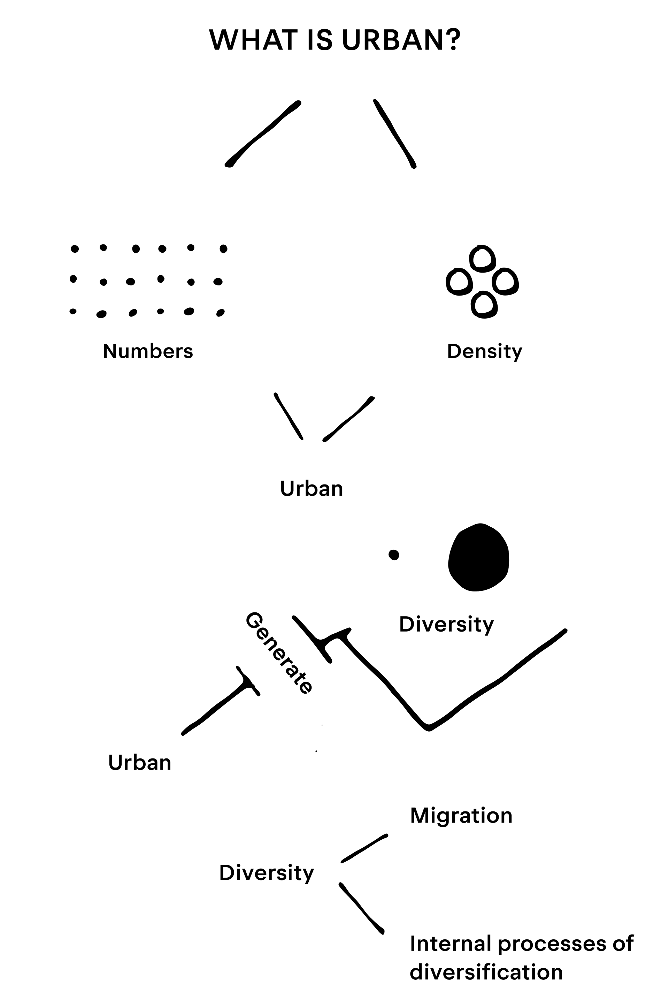
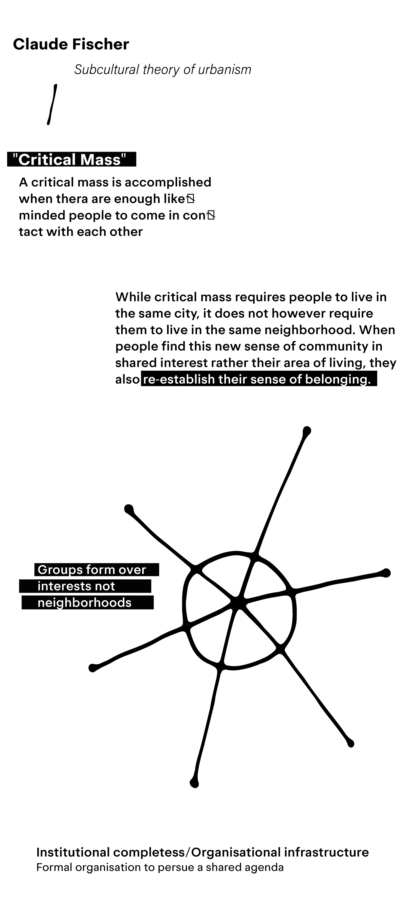

A piece of wood with four wheels has been the spark of one of the largest, most outspread subcultures of our era. An idea derived from bored
californian surfers Mark Gonzales Oceanside FS Feeble 18X24" — J.Grant Brittain
when the waves were low. The children of the community started playing with the possibilities they had, viewing their surroundings as an opportunity for modification and interaction. They tried to apply surfing to the urban landscape and created
skateboarding.

Skateboarder Magazine Volume 2 Issue 1, p02-03
The thought of it was that all of the empty spaces and grey staircases could be a place for creation, not just a commute. The idea however of skateboard culture was not received that well by mainstream society, some countries even outlawed its activity. In my home country of Norway, skateboarding was an illegal activity until 1989 when it finally got
repealed. Photo: Bjørn-Owe Holmberg,
Politician Bro Harlem Brundtland during legalization.
This is a common occurrence with most subcultural ideas. They get outlawed and criticised until it slowly encapsulates more and more people, evidently trickling into the mainstream. This rather new relationship between the normal and the unusual is a fabrication of our modern world, specifically the modern city. A place of development, of efficiency and motion, often a melting pot of cultures. In the city, you would expect a roaring clash of opinion and style, a place where there is so much happening you have no other choice but to ignore any distraction and experience it. For some reason, this is not what many modern cities feel like. Something has set in motion a way of designing a city that puts a hold on subcultural growth and expression, thereby hindering diversity. After all, if everyone feels the same way and moves in the same direction it is easier to streamline sales. But how does the majority of the population react to subcultural ideas and why do they always find their way into the norm and acceptance? I’ll also elaborate on why and how we can interact, produce and engage with our public or even unused private spaces with play and creativity. Is maintaining free space in the city important to maintain innovative cultural ideas and expression? My hope is that such elaboration can invite mainstream society to become more engaged in the creative manipulation of space.
Why do we feel this way?
Pioneers in advertising and design such as
Ernest Elmo Calkins Ernest Elmo Calkins in 1905.(1868-1964) and
Raymond Loewy. Photo: Lewis Morley(1893-1986) spoke on the relationship between the mass consumer base and the innovative minority and how to bridge the gap. Ernest introduced the idea of incorporating characteristics from avant-garde modern art into commercial design and that its cubistic futuristic and expressionistic veneers would capture the consumer’s better than a hundred slogans. He simply made his commercial artists working under him “smooth out” the edges, apply an ornament or two and make it palatable for the consumers.
1
Heller, Steven, The underground mainstream, Graphic design theory, Edited by Helen Armstrong, Princeton architectural press, 2006, p98-p101.
You see, everyone wants to feel like they are a bit on the edge, in possession of a new invention. But as soon as that invention, design, style or idea is just too alien for the masses it might be shunned away as too out there and rejected.
This is where Raymond’s
maya
(Most advanced yet acceptable) principle came into play. If a product or design is too advanced and too derived from the norm, it has a good chance of being rejected. If a product or design is able to hit the balance between what someone finds familiar and still innovative and new it has a good chance of being embraced as a slightly edgy/more intriguing product than its competitors.
To bring all of this into one thought I would like to explain how I interpret the “edgy” response and production. Why the mainstream is programmed to be drawn to slightly progressive but acceptable ideas? It is a feeling, like love, anger or sadness. The feeling of being original. Being the one on the junkyard playground that discovered a new object under some rubble or you participate and support your friend that has an imaginative idea. The feeling that is fueling the concept we know as “trends” is connected to our inner child, play and creativity. Even someone who thought they left all of their playfulness in their childhood can not escape this feeling. It will affect them less and differently than the youth but eventually, they will also be reached.
To understand why we as young people choose to derive from the normality of society, we have to understand creativity and where it comes from. From the time we are babies, we are concerned with
play Pieter Bruegel the Elder — Children’s Games
as the most important factor to learn and to grow. Playing is deeply rooted in us as people, It is an activity with no fixed rules or regulations. A space for interaction, conversation, and creativity. Play should give a child the confidence to make their own decisions and use their power of imagination to create. When kids are engaged in this kind of play, they think for themselves. That is if the play is unstructured and not dictated by adults. Most adults feel like they can steer kids in the direction of play and creativity, but the truth is that we are displaying knowledge already developed by adults. Hence not allowing creativity to play its part. A
playground Maria Helena Chartuni — Carousel,
MASP Library and Documentation Centre,
Photo by Luiz Hossaka
structure is often a designed framework for play. Therefore not allowing new thoughts to inspire even yourself. In 1938 the Dutch historian
Johan Huizinga

Summer stamps 1954,
Stamp Number NL B267
christened us
Homo ludens – ‘playing man’.
Huizinga also said everything we call ‘culture’ originates in play.
2
Huizinga, Johan, Homo ludens. Proeve eener bepaling van het spelelement der cultuur (1938).
So what happens if we provide kids with the space and opportunity to create and rely only on their imagination to play?
Carl Theodor Sørensen Carl Theodor Sørensen in 1949.
, a Danish landscape architect, had attempted to design several playgrounds before realising they bored kids to death. Any of us can see this scene in front of us, a sandbox, a couple of swings, and maybe some elevated metal bars to swing from a to b. Sørensen however, thought that kids would much rather prefer to play in junkyards and building sites. That inspired him to design something completely new, and in 1943 he was able to test out his idea. A playground without rules or safety regulations. His idea turned into
"The junkyard playground" Photo: Ole Schultze Henriksen
in the Copenhagen suburb called Emdrup. A 7000 square-metre lot that he filled with bricks, broken down cars, firewood, and old tires. Sørensen's vision was that they could “dream and imagine and make their dreams and imagination reality”
3
quoted in Robert Dighton, ’The context and background of the first adventure playground’, adventureplay.org.uk
The playground was a resounding success, on an average day it would attract over 200 kids to Emdrup to play. As well as inspiring similar projects in surrounding countries.
I believe I would have been one of those kids if I had the chance. As a young boy in Oslo, I grew up in a very safe and calm neighbourhood called Løren. At the time I was about eight years old, and was influenced by everything around me. Even at the time thinking I was in a bicycle gang with three of my friends inspired by a cartoon on the tv called
Biker Mice from MarsFirst aired: September 19, 1993
Last aired: February 24, 1996
This was a time when the concept of law or property wasn't established in our minds. As we were, on missions around the neighbourhood, we discovered exactly what Sørensen created in Emdrup. We were introduced to a space, a junkyard surrounding a warehouse. We did not know who owned the warehouse or what it contained. All we saw was an opportunity to create and build something. We came back to this courtyard day in, and day out. As we played, we soon found the curiosity of the warehouse too present and it was impossible not to try and get a peek at its contents. We made it a project to chisel away at the brick wall using tools we could find around the courtyard. After hours and hours of work, we finally got through and made our discovery, Two boats. Entering the warehouse seemed like entering a forbidden cave full of treasure. We had no intention of causing any harm or vandalism to the contents of the warehouse, only to ponder over finding out what it was. About a week after our discovery, we arrived only to see police cars and frustrated boatowners discussing outside of the warehouse. Thankfully we managed to jump behind bushes before anyone caught notice. Until this very day, I wonder how that conversation between the owners and the police officers played out. A hole in the wall instead of a cut chain and nothing was stolen or missing from their property.
So, unhinged creativity thrives in an unstructured framework. It thrives in play and outside of the lines drawn for us to stay within. Creativity within a city can manifest as a subculture, a group or several groups of people with ideas and actions that move outside the norm. Outside of what the majority of the population at the time seemed common or acceptable. Monumental groups of this fashion have been sparked by political views, musical discoveries, activities, and even geological or topographical distinctiveness. Ideas have the power to bring people together, and so does space.
Versus the city
In the city, I have observed a relationship that I have found pivotal to a city’s soul and identity. That is the relationship between subcultural activities and space, Facilitation. For Each city I have been fortunate to have developed a relationship with, I have noticed a similar use of space and interaction between denizens of the city and its administrators. Both
Oslo Rådhusplassen (Oslo City Hall)
and
The Hague Photo: Ronaldo Wold Figueiredo, The Hague, Spui
in The Netherlands have architectural space in front of the city hall that has throughout the decades been a meeting place for skaters and youth alike. It’s the centrality of the location, the significance of skating in a public and often governed part of the city, thereby showing authority the middle finger. But most of all the architecture is especially
suited Photo: Ronaldo Wold Figueiredo, The Hague, Spui, Granite stone tiles
for the activity itself. Either way, it is a prime example of a space that is commonly used in a passive manner and turned into an active participation to create active users and editors of the architectural space. Both of the places I have mentioned have battled the government and city administrators for the right to use the space.
In Oslo for example after police action and exiling the skaters did not succeed. In opposition to the activity, city administrators implemented
hostile architecture. Factory Furniture — The Camden bench, installed in Camden, London, in 2012
Hostile architecture is an urban-design strategy that uses elements of the built environment to purposefully guide or restrict behaviour. Either
slanted benches
in the city to prevent homeless people from taking a rest, spikes on ledges and even “urban furniture” in unusual positions. One summer at the Oslo city hall, gravel was laid over the space making it impossible to skate, but that didn't stop the everyday users of the space, the kids brought brooms and garbage bags to clear up the space.
4
Dutton, Robert, Editing the City: The (Dis)location of Socio-Spatial Subcultures in Contemporary Urban Space.
This solution is exactly what was proposed in 2022 when the city administrators of The Hague were presenting their renovation plans for their city hall surroundings. Provoking the skating community surrounding
Spui (name of area) To hold protests and demand that they would be involved in the process of development. They eventually succeeded and got their own designated area that would stay unaffected.
In Oslo, the next form of action for the frustrated bourgeoisie city administrators was to implement heavy flowerbeds in places to prevent movement. Remember, the intention of this architecture is not to be aesthetic or practical. Leaving it a sore to the eyes in most cases. This happens in big cities all over the world without us realising it. In this case, the flowerbeds were so horrible they got media attention and were removed because of societal pressure and criticism. These conflicts to me represent the bridge and barrier between the search for play in the modern city and its reaction. It also tells me that to bring forward change in the right direction there is no place to neglect the participation of the private, municipal, public and active users. Dialogue is the only way to properly produce space.
It is common within the architectural discourse and pedagogy to use the term ‘reading’ as an analogy for how people interact with space and architecture within the city. Architects who work with this method in mind will ultimately design the materials and forms to be read by the occupants. This method is mainly used to emphasise the importance of accessibility and usability. Spatial semiotics (the idea that ‘architectural’ space has a language that can be read) relies upon an assumption that there is only one possible way of ‘reading’ a space.
However, the idea that architectural space only has one language meant to be read, means people (‘users’ of architecture) can only be subject to their environment, thereby not being the subject that creates that space. French philosopher
Henri Lefebvre (1991) By Verhoeff — Bert / Anefo — Dutch National Archives — The Hague — Fotocollectie Algemeen Nederlands Persbureau (ANeFo) (1991)
wrote that considering space through the model of spatial semiotics diminishes the dynamic role of space as both the location for and product of social interaction, and reduces it to the status of a message to be consumed. According to Lefebvre, meaning is defined as a habit of action, and this notion of meaning can be applied to objects and actions related to that space, including our own organic body. Henri Lefebvre is regarded as one of the most influential sociologists and French thinkers of the 20th century. In his book
The Critique of Everyday Life (1947)
, Lefebvre critiques several aspects of contemporary everyday life. One of the book’s central ideas is “The right to the city,” which was the title of his book published in 1968. In it, Lefebvre raised a call to “rescue the citizen as the main element and protagonist of the city that he himself had built” and to transform urban space into “a meeting point for building collective life”. As well as posing the question “Would not specific urban needs be those of qualified places, places of simultaneity and encounters, places where the exchange would not go through exchange value, commerce and profit? Would there not also be the need for a time for these encounters, these exchanges?”
When I want to engage with the city with friends or by myself, the city demands something of me. I can't really imagine a place within the city not affected by nature where I would find it enjoyable and exciting without having to buy something. My city wants me to pay for myself. I am not welcome if I am not putting money into someone's pocket, and if I am homeless with nowhere to go I can’t even rest on a bench. The reality of the modern city is that it is not your home, It doesn't want to be. It is designed for purpose and reason. If you observe people in their everyday life it becomes obvious that everyone is on a trajectory, always going somewhere. Moving towards a checkpoint without too much regard for what is experienced in between. The situations and possibilities that can be created by design, or rather the lack of it.
The formative effect of space
The relationship between urban expansion and the formation of subculture was formulated by
Claude Fischer American sociologist and Professor of Sociology at the University of California, Berkeley.
in his ‘subcultural theory of urbanism’. With this illustration, I am visualising Fischer's view on
Louis Wirth 1897 - 1952> American sociologist and member of the Chicago school of sociology. His interests included city life, minority group behavior, and mass media, and he is recognised as one of the leading urban sociologists.’s initial theory about defining the urban in his book ‘urbanism as a way of life’.


The nature and availability of urban space is a factor that has been left outside the scope of Fisher’s subcultural theory of urbanism. In fact, studies of subcultural groups often tend to concentrate on their cultural artefacts such as fashion, style, and music, but appear not to include their spatial environments.
5
Sheridan, Dougal, The Space of Subculture in the City: Getting Specific about Berlin’s Indeterminate Territories.
The importance of urban space in relation to the formation of subcultural groups is significant. In the essay ‘The Space of Subculture in the City’
6
Sheridan, Dougal, The Space of Subculture in the City: Getting Specific about Berlin’s Indeterminate Territories.
Dougal Sheridan poses an important question. He says
Acknowledging the relationship between the accumulation of subcultures and the availability of space prompts the question as to whether the nature of this space allows or affects the formation of subcultures. Do these spaces have a formative effect, or do they just provide space for existing subcultural groups? The understanding of indeterminate territories as spaces outside hegemony, offering the experience of urban fragments removed from the spatial and temporal continuum of the city, suggests that these spaces may indeed have a formative effect.
Dougal is writing in relation to
Berlin New Berlin transit map (effective from December 11, 2022) and uses the example of the shift of the ‘subcultural scene’ into East Berlin directly after the removal of the wall to take advantage of its empty and undefined territories as one of the cases where space has been a catalyst for subcultural creation and formation. As it has provided a free space in that regard it has also provided a space for youth to become editors and contributors to space and architecture.
Images captured in Berlin 20, 01, 2023 - 22, 01, 2023 by me with a Minolta Hi-matic CS New Berlin transit map (effective from December 11, 2022) on Kodak 400 film
I only see one cellphone in this photo, and it is not in use.Conversating seats.Tempelhofer Feld, Junkyard playground.Tempelhofer Feld, Library found in the junkyard playground.Tempelhofer Feld, Humble seating.Tempelhofer Feld, ToolsCommute.
In Berlin, people have implemented the idea of creating temporary active spaces by establishing a dialogue with private developers. They are able to find spaces that are in-between decisions or ownership and vacant to use for the purpose of interaction. This allows for the opportunity of a vibrant and spontaneous city environment. The question to me is how can we allow these spaces to become permanent. And should they be? with municipal participation we do have the possibility of providing space in the city for non-capitalistic purposes if it comes to a point where it is valued on the same level.
Dialogue
With this in mind, I would like to point our direction of interest back towards Oslo. History has taught us that squatted and occupied vacant spaces have been met with aggression and ultimately eviction. The relationship between owner and user has always been unequally weighted in power, and perhaps rightfully so. One part has a capital investment in the property and that is exactly what drives their actions. A conversation between these two parts seems to be doomed from the get-go. Occupants are often individuals who do not fit perfectly into society or students who are trying to move against the extreme constraints of the system in place. The people who own property do not view their property as a space of collaboration. The issue here is precisely this, the private is fighting the people. In Oslo however, we have seen a case that has proven that collaboration between these parts is in fact possible with municipal participation.
"Hausmaniakvartalene" Photo: Olya Lavrik (2019) is a city quarter in Oslo that has been actively used and utilised by activists and artists since the winter of 2000. At that time the area was mostly a rundown abandoned factory owned by the state property owner Statsbygg Company emblem Some of the activists were squatters and made one of the apartment buildings their own. It was a place for the less fortunate in society, a couch potato, a homeless person, an artist or others in an untenable living situation. They called themselves the
West Bank Housing and Work Collective (Bo- og Arbeidkollektivet Vestbredden). The other activists wanted to create an alternative cultural centre, which they did, next door to the West Bank. It was to be an artist-run cultural centre, detached from the commercial market, and the form of governance set in place was a so-called flat structure: No one above, no one below. But to survive, They would have to have a dialogue with the municipality for them to take over the contract. Or in Fischer’s words, they had to achieve institutional completeness. It was important to establish a common vision, a “face” to the outside world. Internally among the members of the community, there was interest in a more confrontational approach towards the municipality. Putting weight on the fact that without the confrontational essence of surrounding activist centres such as ‘Blitz’, they would not be in the position they are in now. This notion was eventually voted against as it is important for them to appear with credibility so that they retain the “favour of politicians and the population”.
7
Andersbakken, Ola, Makt, motstand og etablering av symboler “det frie kulturinitiativet” møter de offentlige myndighetene, may 2006.
Blitz is regarded as an anarchist cultural centre that has its beginnings rooted in the relationship Hausmania is about to embark on. On the 9th of October 1981, Oslo was facing a housing crisis. There was simply not enough housing in the city to accommodate the youth of the city, especially the unfortunate ones. The situation escalated to the event of 200 young adults squatting in a housing complex in
Skippergata (skipperstreet) Photo of Pilestredet 16, occupied in protest against remediation. Oslo, 1977. on the east side of Oslo. Some are homeless young people who live almost like beggars in the city. Some are political activists who believe the occupation is a fight against capitalism. But there is also a relatively large group of rebellious and adventurous young people who found occupation fun. The police and municipality were aware of the happenings but decided to not engage in any confrontational behaviour and let the building get squatted. Rather than confrontation the politicians involved decided to engage in
conversations Hans Svelland (Deputy Mayor) and Dag Hotvedt (Speaker for the occupants) with a rather organised group of young individuals. Hans Svelland, who was the vice governor at the time, was the one to lead the negotiations. He said in an interview with VG Verdens Gang ("The course of the world"), generally known under the abbreviation VG, is a Norwegian tabloid newspaper.
8
Svensby, Egil, VG, 35 år siden Skippergata: Okkupasjonen som skapte Blitz, Published: 26.11.16, Updated: 05.05.19.
(one of the largest newspapers in Norway) that their decision was the right one. He also says that he had a certain understanding of the demands they had. The occupants demanded three things:
A place to live
A place to work
Their own activity house
He continues, "If you try to look at the requirements from the outside, these are the same standards that were applied when the monastic system was created. Eight hours of sleep, eight hours of work and eight hours of prayer. But in our culture, eight hours of prayer has been replaced by eight hours of self-cultivation. So the requirements were easy to understand.” The coming winter the municipality was able to meet their demands and was able to offer housing, help to acquire work and their own youth centre later known as “Blitz”.
Hausmania were able to establish a dialogue with the city and find a common vision for the future of the area. The culture house is still under municipal ownership and has the purpose of providing cheap and affordable space for production and expression. The squatted areas of Hausmania however were sold and discarded to a private developer in 2016. It seems the municipality deemed the polished part of freedom acceptable and the other not. From this interaction, it is shown that alternative space can be produced for the city by the city and the people together through dialogue. Yet there is always going to be an expression that developers/investors deem worthy and “clean enough”.
The Factory
I wonder about the factory building in question. The playground that this community integrated with. The place that was once a junkyard but through organization and originality became something extraordinary and pure. The place that sparked the dialogue between the structured and unstructured. I would like to present a story from the building itself.
I AM A RUNDOWN FACTORY IN THE HEART OF THE URBAN LANDSCAPE. ONCE A THRIVING HUB OF INDUSTRY, I AM NOW A FORGOTTEN RELIC OF A BYGONE ERA. BUT DESPITE MY DECAY, I HAVE FOUND NEW LIFE. AS PEOPLE BEGAN TO FLOCK TO MY CRUMBLING WALLS IN SEARCH OF EXPLORATION, I FOUND MYSELF REBORN. I BECAME A PLAYGROUND FOR THE CREATIVE MINDS OF THE CITY. GRAFFITI ADORNED MY WALLS, TURNING MY ONCE DRAB EXTERIOR INTO A COLOURFUL AND VIBRANT CANVAS. MUSICIANS AND ARTISTS SET UP SHOP INSIDE MY WALLS, USING MY VAST INTERIOR AS A SPACE TO CREATE AND COLLABORATE. PEOPLE FROM ALL WALKS OF LIFE WOULD GATHER HERE, AND IT DIDN'T MATTER WHAT THEIR BACKGROUNDS WERE OR WHAT THEY DID FOR A LIVING. WE WERE ALL UNITED BY OUR LOVE FOR THIS SPACE AND THE SENSE OF BELONGING THAT IT GAVE US.
BUT I WAS MORE THAN JUST A PLAYGROUND. AS MORE AND MORE PEOPLE MADE ME THEIR HOME, I BECAME A COMMUNITY. NEIGHBOURS GATHERED OUTSIDE MY WALLS, SHARING STORIES AND LAUGHTER. I BECAME A SPACE FOR MEETINGS AND RALLIES, AND CONVERSATION. I AM A PLACE WHERE SUBCULTURES ARE FORMED, WHERE PEOPLE COME TOGETHER TO CREATE NEW COMMUNITIES BASED ON SHARED INTERESTS AND VALUES. I SEE THE GROUPS OF ACTIVISTS WHO USE MY SPACE TO ORGANISE PROTESTS AND RALLIES, FIGHTING FOR THEIR RIGHTS AND THE RIGHTS OF OTHERS. I SEE THE DANCERS WHO COME HERE TO PRACTICE THEIR MOVES, BUILDING A COMMUNITY OF LIKE-MINDED INDIVIDUALS WHO SHARE A PASSION FOR MOVEMENT AND MUSIC. I SEE EVERY PERSON THAT IS ABLE TO SEE MY VALUE AS MORE THAN MY MATERIALS.
OF COURSE, THERE WERE SOME WHO SAW ME AS NOTHING MORE THAN A RUNDOWN OLD BUILDING. THEY WANTED TO TEAR ME DOWN AND REPLACE ME WITH SOMETHING NEW AND SHINY. BUT FOR OTHERS, I WAS A CELEBRATION OF THE HUMAN SPIRIT. THEY SAW THE WAY THESE GROUPS HAD TAKEN AN EMPTY PASSIVE SPACE AND INFUSED ME WITH THEIR OWN CREATIVITY AND ENERGY. THEY BELIEVED THAT THE INTERACTIONS AND PLAY THAT TOOK PLACE WITHIN MY WALLS WERE ESSENTIAL TO THE HUMAN EXPERIENCE. I MAY JUST BE A RUNDOWN FACTORY, BUT I AM MORE THAN THAT. I AM A SPACE THAT HAS BEEN INFUSED WITH THE ENERGY AND CREATIVITY OF THE PEOPLE WHO HAVE COME TOGETHER WITHIN ME. AND IF THAT ENERGY AND CREATIVITY ARE DISPERSED, IF THAT SENSE OF COMMUNITY IS LOST, THEN THE CITY ITSELF WILL SUFFER. IT'S TIME FOR THE CITY'S LEADERS AND DECISION-MAKERS TO START VALUING THE SOUL OF THE CITY, TO RECOGNIZE THE IMPORTANCE OF COMMUNITY SPACES LIKE MINE, AND TO PROTECT THEM FOR THE BENEFIT OF ALL.
FOR MY SOUL IS FRAGILE. IT'S VULNERABLE TO THE FORCES THAT SEEK TO TEAR ME DOWN, TO ERASE ME FROM THE CITY'S LANDSCAPE. WHEN THE DEVELOPERS CAME WITH THEIR PLANS FOR A NEW CLEAN GLASS BUILDING, I FELT MY SOUL QUIVER WITH FEAR. I KNEW THAT THE VIBRANT COMMUNITY THAT HAD FORMED WITHIN ME WOULD BE DISPERSED, THAT THE SENSE OF CONNECTION AND BELONGING THAT HAD TAKEN ROOT WOULD BE LOST. FOR A WHILE, IT SEEMED LIKE I MIGHT BE PROTECTED. THE CITY COUNCIL ACKNOWLEDGED MY NEWFOUND IMPORTANCE TO THE COMMUNITY AND CONSIDERED DESIGNATING ME AS A HISTORIC LANDMARK. BUT THE FORCES OF MODERNITY WERE TOO STRONG. DEVELOPERS SWOOPED IN, EAGER TO TEAR ME DOWN AND REPLACE ME WITH YET ANOTHER GLASS AND STEEL MONOLITH. DESPITE THE PROTESTS OF THE COMMUNITY, I WAS CONDEMNED TO DEMOLITION.
AND SO, I URGE THE WIDER WORLD TO SEE THE VALUE IN SPACES LIKE ME. I IMPLORE YOU TO SEE US NOT JUST AS BUILDINGS, BUT AS LIVING AND BREATHING PARTS OF THE COMMUNITY. I IMPLORE YOU TO PROTECT US, TO INVEST IN US, TO CELEBRATE US. FOR IN DOING SO, YOU WILL BE INVESTING IN THE HUMAN EXPERIENCE, IN THE POWER OF COMMUNITY, AND IN THE SPIRIT OF HUMANITY ITSELF.